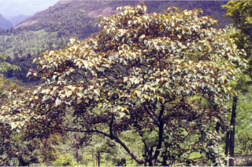
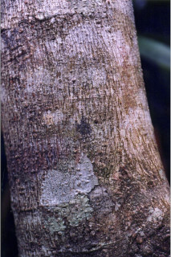

Images :




| Habit : | Trees up to 12 m tall. |
| Leaves : | Leaves simple , alternate , spiral ; stipule caducous ; petiole 3-12.5 cm long, terete , stellately tomentose , swollen at both ends; lamina 8-25 x 6.5-20 cm, broadly ovate to orbiculate , apex acute to acuminate , base peltate or subpeltate , usually entire or trilobed when young, coriaceous , densely white stellate tomentose beneath; 3-5_nerved_at_base ; tertiary_nerves nearly horizontal percurrent . |
| Inflorescence / Flower : | Flowers unisexual , dioecious , in axillary or terminal panicles , stellate tomentose . |
| Fruit and Seed : | Capsule , globose , echinate with soft wooly spines ; seeds 6. |